Primeros pasos
Desde la pantalla de inicio, se puede acceder a RistoCloud a través del menú pertinente.
Guia visual :
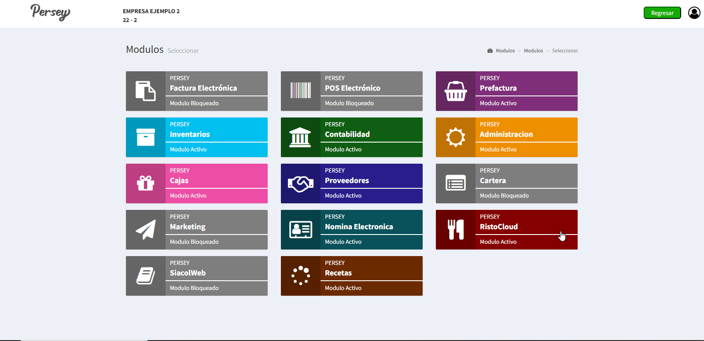

Desde la pantalla de inicio, se puede acceder a RistoCloud a través del menú pertinente.
Aqui se podrá guiar paso a paso sobre como utilizar el módulo de consumos para generar comandas y realizar la facturación.
En el menú lateral, podemos acceder a Consumos - Toma Pedidos, o a través de la opción superior esquina derecha.
En esta opción se podrá configurar la información del cliente o de la persona sobre la cual estará a nombre la comanda. Para ello, sobre una mesa ocupada, es decir, con articulos ingresados, se puede cambiar la información del tercero desplegando el menú de opciones.
Seguido a esto, aparecerá en pantalla el formulario de registro del tercero, si ya se encuentra registrado, digitar la cedula en el campo CC/Nit y dar enter, si el tercero ya se encontraba registrado anteriormente, la información restante se autocompleta, si no se encontraba registrado, es necesario digitar los campos obligatorios de acuerdo al tipo de persona y posteriormente, dar en Guardar
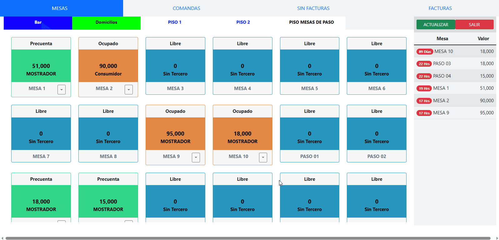La mesa ya debe tener artículos registrados para poder acceder a esta opción, para registrar una comanda se debe dar click sobre la mesa en estado Libre, posterior se redirige a la pestaña COMANDAS y allí podrá seleccionar los productos para agregar a la orden. Finalizada la adición de artículos, dar en el botón Guardar de color verde, saldrá un mensaje diciendo que si se desea imprimir la comanda, si se desea, dar en SI, o si no, simplemente decir NO, la mesa ahora cambiará a estado OCUPADA, ya que ya tiene comandas registradas.
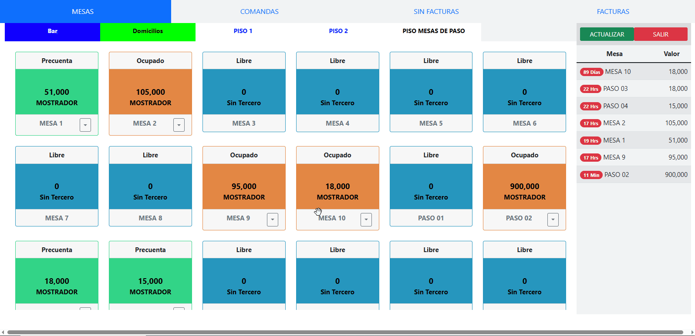La opción Cerrar Mesa se utiliza para cerrar la mesa y poder realizar el proceso de prefactura, factura o cortesía de las comandas.
Para poder acceder a esta opción, se despliega el menú de mesa en estado ocupado y se selecciona la opción Cerrar Mesa.
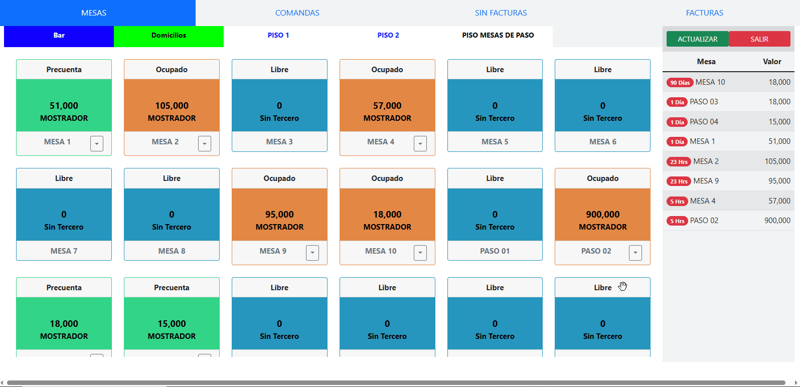Le pedirá al usuario confirmar si quiere o no quiere imprimir el informe de consumo, se selecciona la opción Si en caso de ser afirmativo.
La opción Cambiar mesa se utiliza para cambiar la mesa donde se ha realizado una comanda, y mover dicha comanda con sus artículos a otra mesa.
Para acceder a dicha opción, se despliega el menú de la mesa, y se selecciona Cambiar Mesa. Seguido, aparece el formulario para seleccionar la mesa donde se moverán las comandas, se selecciona tanto el ambiente como la mesa, y se da en el botón Cambiar Mesa
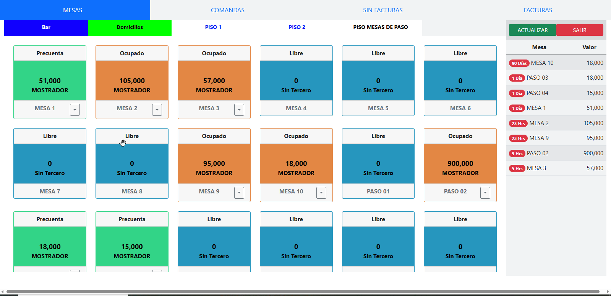La mesa original se libera y la mesa a la que se le asignó el cambio pasa a estar ocupada.
La opcion Dividir Cuenta tiene como objetivo separar las facturas de una mesa determinada, moviendo solo los productos deseados a una mesa auxiliar para poder facturarlos de forma separada.
Para poder realizar el proceso, en la vista de consumos, sobre una mesa con comandas registradas (En estado Ocupada) y aún sin cerrar, dar click sobre el menú de opciones, luego seleccionar la opción Dividir Cuenta
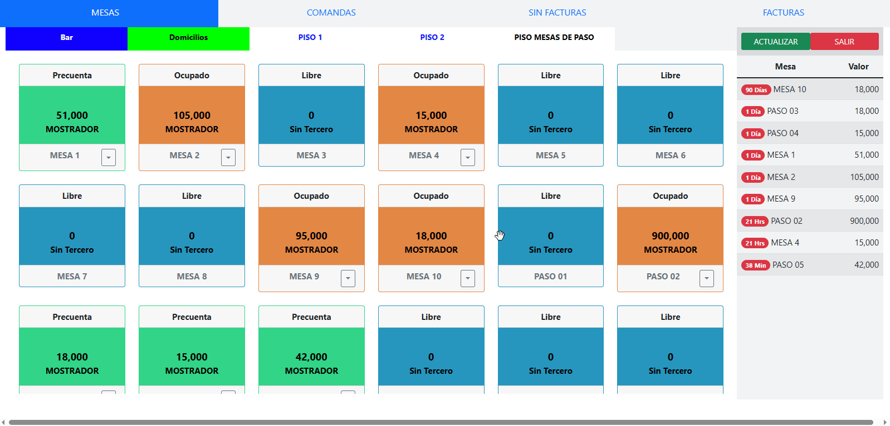Sobre el siguiente menú, se debe seleccionar los productos a separar de la mesa actual, también se debe seleccionar la mesa auxiliar sobre la cual se generará la factura de esos productos, también seleccionar el cliente, este ultimo ya está por defecto. Luego de seleccionar la mesa y los productos, dar click en Guardar
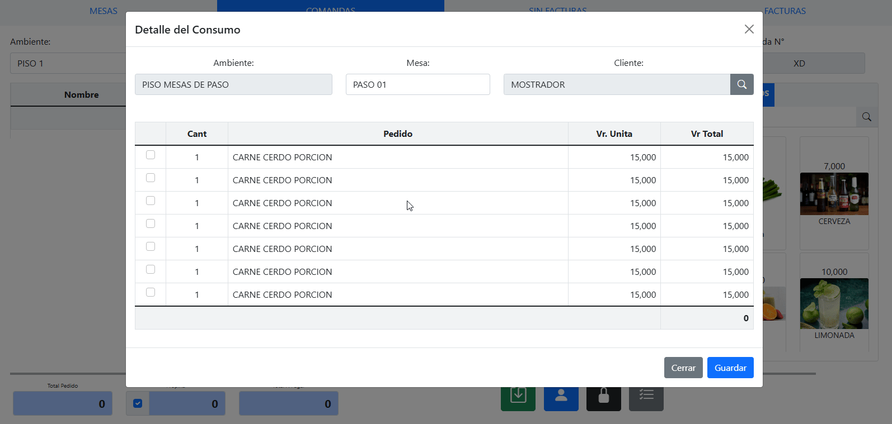Una vez finalizado el proceso, es posible visualizar la mesa auxiliar con su total de acuerdo a los productos asignados, tener en cuenta que el proceso de Dividir Cuenta separa las cuentas de los productos seleccionados en la factura actual, los mueve a una mesa auxiliar, cierra la mesa y queda lista para realizar los procesos de prefactura, factura o cortesía.
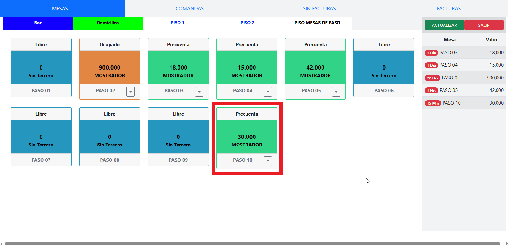El menú Sitios de preparación permite crear los diferentes sitios o ambientes de preparación y toma de pedidos, tambien permite asignar los equipos de impresión a cada uno de dichos ambientes. Para acceder a el es necesario abrir el menú lateral y dirigirse al menú de Consumos, Catalogos - Sitios de preparación, allí se visualizarán los ambientes registrados junto con el equipo de impresión asignado.
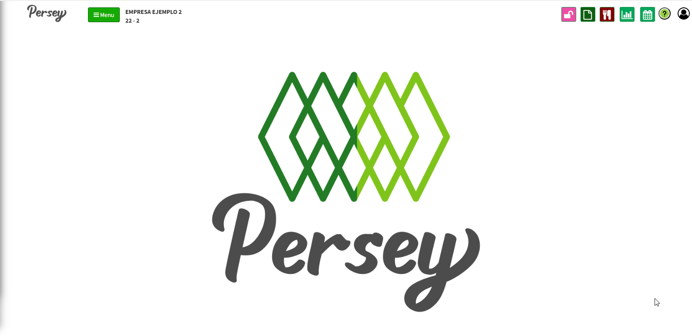Para crear un nuevo sitio de preparación, se debe dar click sobre el botón Nuevo. Posterior, se abrirá el formulario de registro del nuevo sitio de preparación, para registrarlo, se deberá digitar el Nombre del sitio, Impresora y Estado. Finalizado el proceso, dar click en Guardar
Cuando se intenta acceder a la vista de consumos sin antes haber abierto una caja, saldrá el siguiente error:
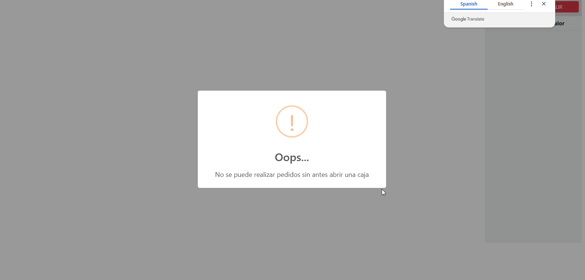Por lo que es importante abrir siempre una caja diariamente para comenzar a operar en las mesas y ambientes.
En el menú lateral de RistoCloud, en la sección Consumos - Catálogos - Ambientes, permite crear nuevos ambientes y configurarles la apariencia como el color de fondo y el color de la letra en el contexto de su visualización en la vista de consumos.
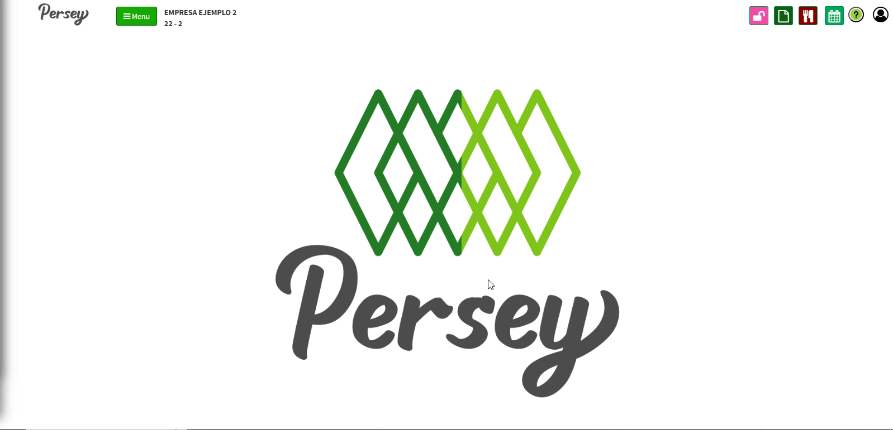Para crear un nuevo ambiente, se debe ingresar el nombre del nuevo Ambiente, el color de fondo y el color de letra. La opción Ver contraste permite visualizar cómo se vería el ambiente con sus colores seleccionados. Al finalizar el registro, dar en Guardar.
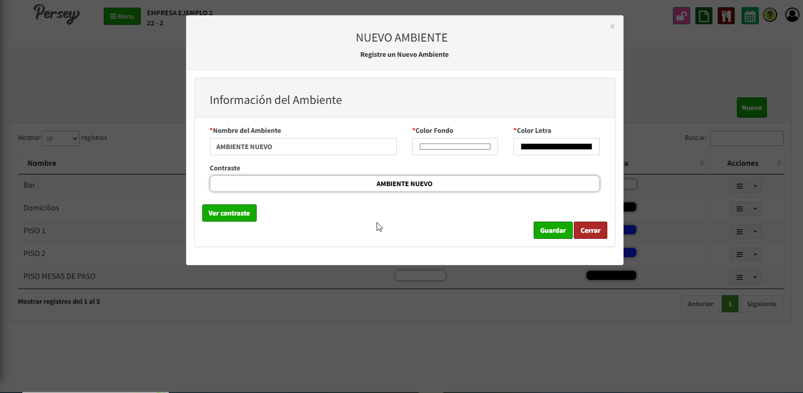La lista de Ambientes permite editar, duplicar o eliminar un ambiente.
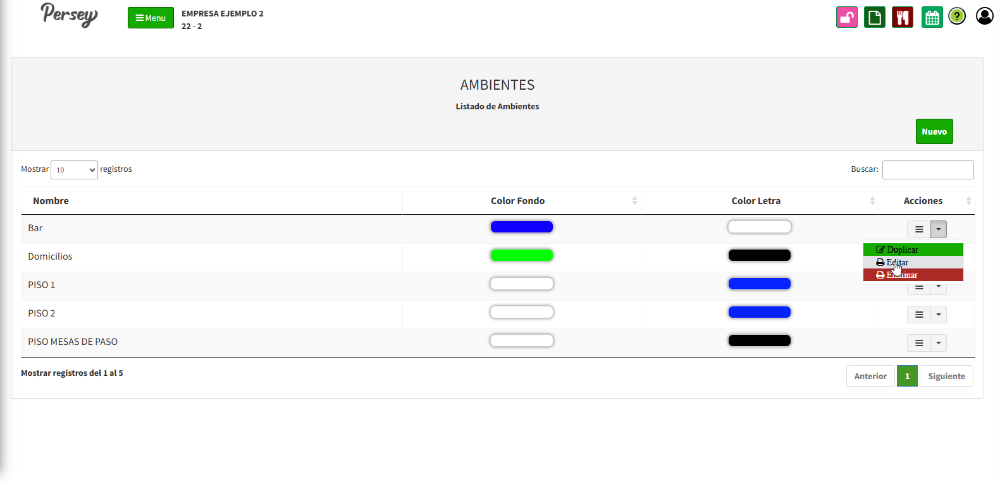En el menú lateral de RistoCloud - Consumos - Catálogos - Mesas se definen y se configuran las mesas por cada ambiente.
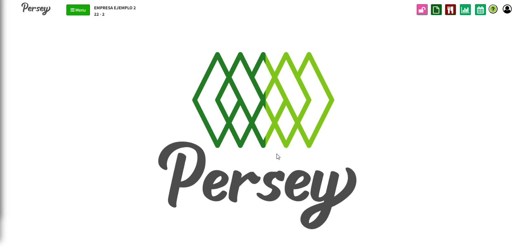Al igual que en el módulo de Ambientes, se permite asignar un color de fondo y un color de letra para la visualización de la mesa en la vista de Consumos. Para adicionar una nueva Mesa, dar click en el botón Nuevo, es requerido establecer el nombre, el color de fondo, el color de letra y el ambiente al cual pertenece. Posterior, dar click en Guardar.
En la lista de Mesas registradas, es posible activar o desactivar una mesa para su uso, sobre el botón verde de la columna Activo dar click para cambiar el estado de la mesa.
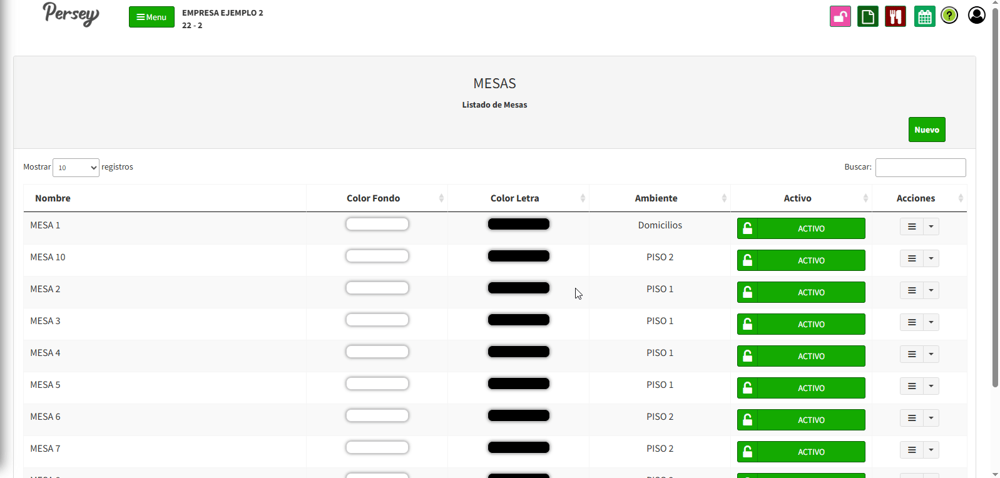En la columna Acciones, al igual que en el módulo de Ambientes, es posible duplicar, editar o eliminar una mesa.
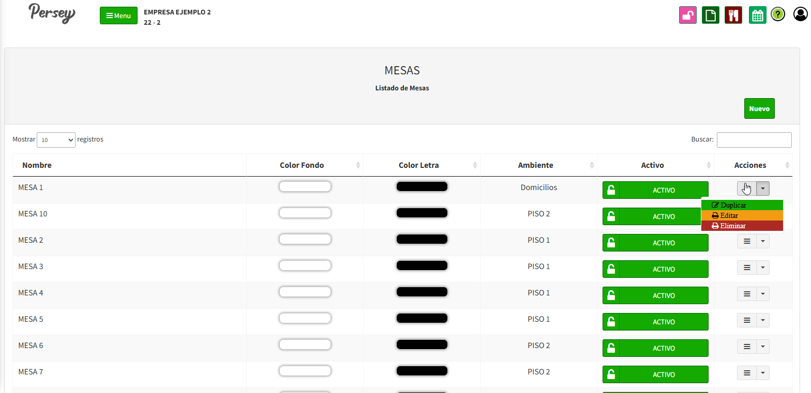En el menú lateral de RistoCloud - Consumos - Catálogos - Meseros se definen y se configuran los vendedores.
Para registrar un nuevo mesero, pulsar el botón Nuevo, los campos a completar son Nombre, Usuario, Estado, Tipo de Vendedor y talonario, al finalizar el registro, pulsar en Guardar como se muestra:
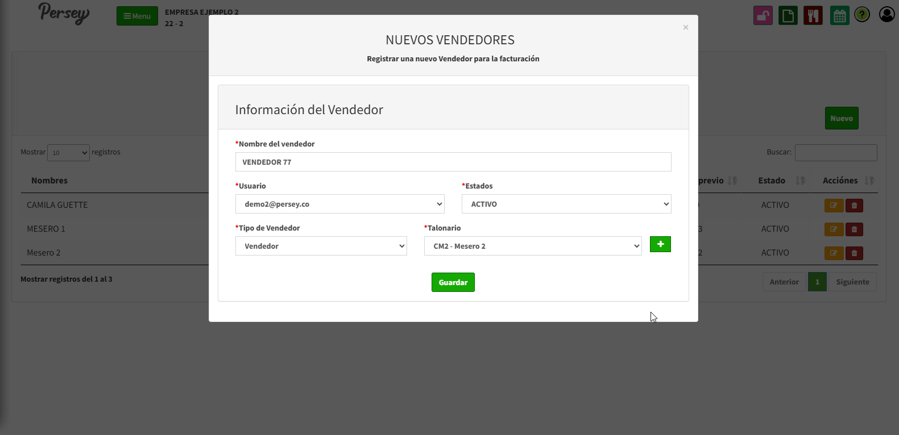En el registro del nuevo vendedor, también es posible registrar un nuevo talonario y asignarlo al vendedor, para ello, en el formulario de registro, en el campo Talonario, dar click en el signo +
Una vez abierto el formulario de registro del talonario previo, colocar un Nombre al talonario, un prefijo, un consecutivo inicial y un consecutivo final, origen (Compras, Ventas o consumos) y reporte (Impresora o bluetooth). Finalizando el registro, dar click en el botón Guardar.
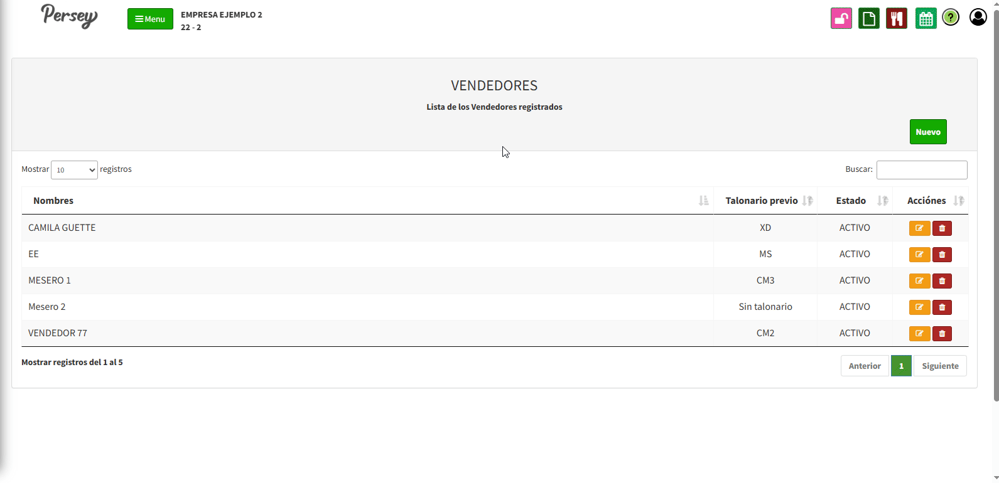El registro volverá al formulario del vendedor, donde ya podrá seleccionar el talonario creado en el campo Talonario.
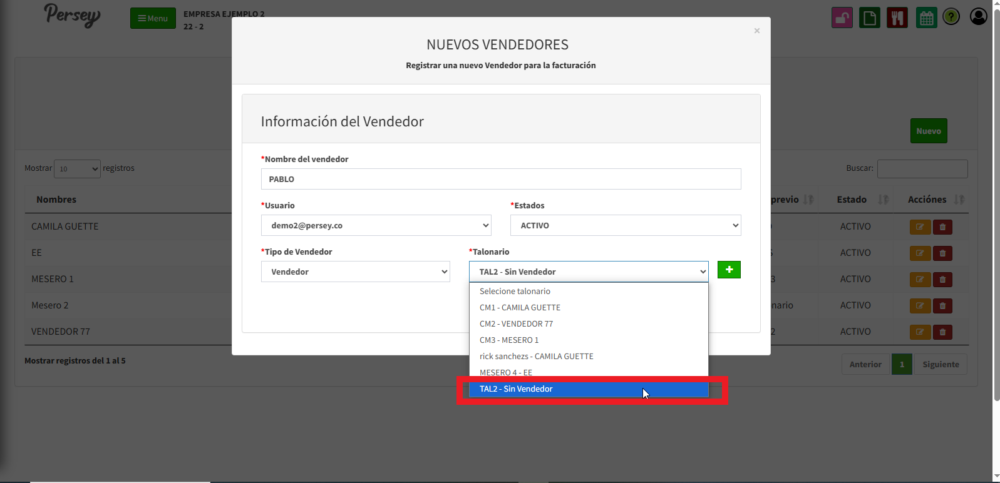En la lista de vendedores, en la columna Acciones de la tabla, es posible editar la información anteriormente registrada en cada vendedor, o en su defecto, eliminarlo.
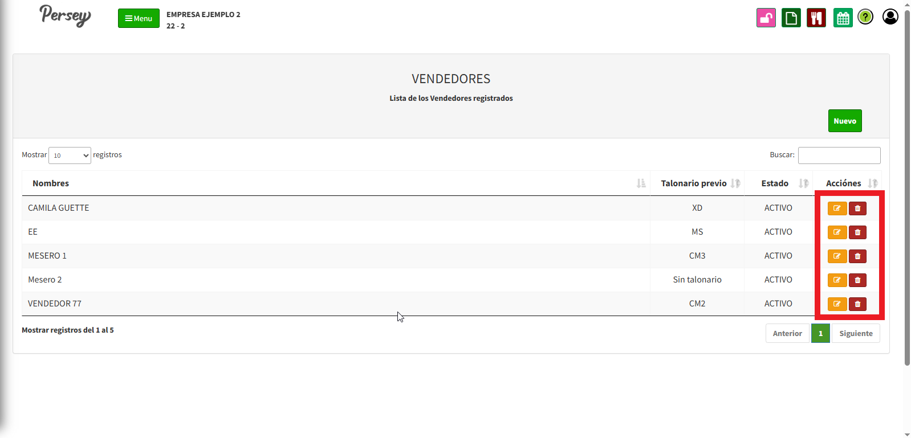En el menú lateral de RistoCloud - Consumos - Catálogos - Estados se definen y se configuran los distintos estados de las mesas.
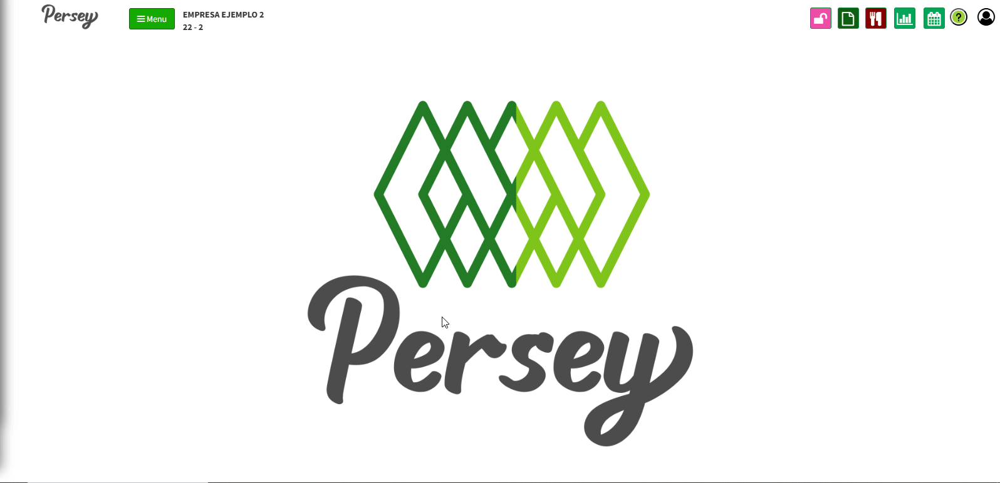Los estados son aquellos asignados a las mesas cuando se realiza el proceso de registrar y facturar las comandas en RistoCloud, para registrar un nuevo estado, pulsar en el botón Nuevo.
En el formulario de registro, es solicitado un nombre para el nuevo estado, un color de fondo, un color de letra y un color para el borde. Finalizado el proceso, dar click en Guardar.
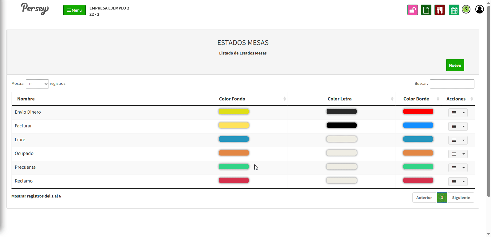En la columna Acciones es posible duplicar, editar o eliminar un estado.
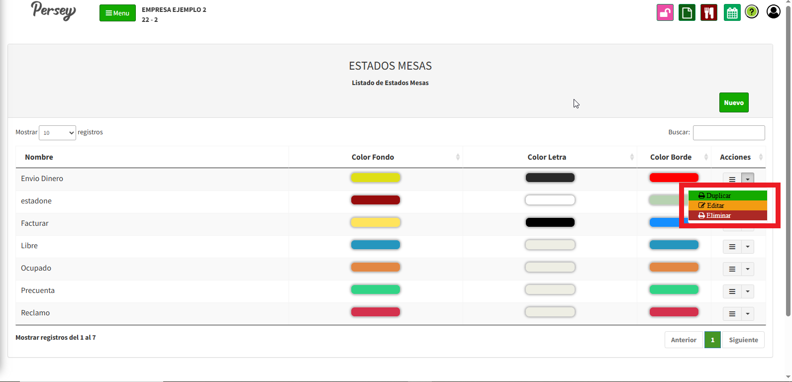